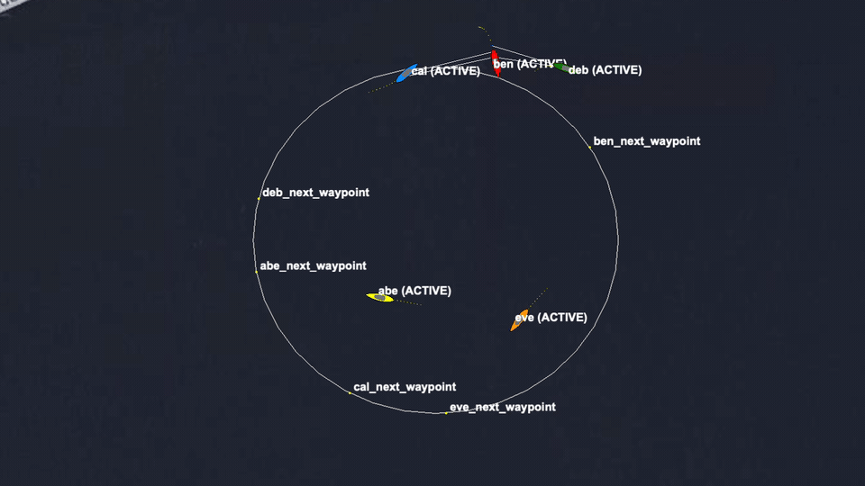
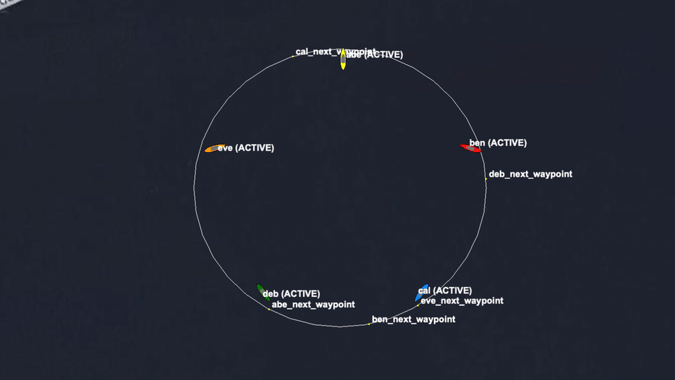

Stem Mission
Baseline scenario context
The stem mission keeps five vehicles moving through a seeded traffic-ring assignment pattern. The seed makes the pressure replayable enough for CI while still exercising repeated COLREGS interactions.
Performance
Seeded traffic-stress tests for COLREGS behavior. These cases replay five-vehicle traffic pressure and grade assignment activity, fixed runtime windows, zero collisions, and warning-free logs.
Stem Mission
The stem mission keeps five vehicles moving through a seeded traffic-ring assignment pattern. The seed makes the pressure replayable enough for CI while still exercising repeated COLREGS interactions.
Examples


Case Matrix
baseline_circle_pass
Covers baseline circle expected pass.
mixed_speed_circle_pass
Covers mixed speed circle expected pass.
endurance_circle_pass
Covers endurance circle expected pass.
assign_fails
is still reported, but it is treated as coordinator health rather than the primary traffic verdict.